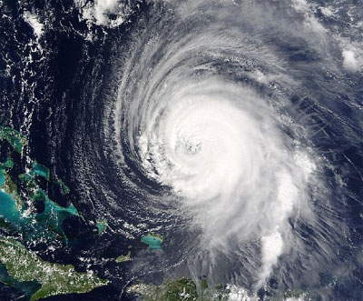

Unidata Science Gateway on the XSEDE Jetstream Cloud
Table of Contents

Figure 1: Credits: NASA
1 Introduction
Welcome to the Unidata Science Gateway on the XSEDE Jetstream Cloud. Unidata is a diverse community of education and research institutions with the common goal of sharing geoscience data and the tools to access and visualize that data. For more than 30 years, Unidata has been providing data, software tools, and support to enhance Earth-system education and research. Funded primarily by the National Science Foundation (NSF), Unidata is one of the University Corporation for Atmospheric Research (UCAR)'s Community Programs (UCP).
As part of our current five-year plan (PDF) "Unidata 2018: Transforming Geoscience through Innovative Data Service", Unidata is exploring cloud computing technologies in the context of accessing, analyzing, and visualizing geoscience data. This site collects Unidata-related technologies hosted on Jetstream; you can make use of these resources either directly in your browser or using one of the client applications described below. Our hope is that by combining the resources available in this gateway – and perhaps coupling them with XSEDE HPC resources – community members can create end-to-end scientific computing workflows in the Jetstream Cloud.
2 JupyterHub
JupyterHub server on Jetstream
JupyterHub is a technology that can be used to serve programmatic, interactive notebooks to a class of students or for scientific researchers. An experimental JupyterHub server is running on Jetstream containing Unidata Jupyter notebook projects:
This JupyterHub server is currently experimental. If you would like to be granted access, please contact support@unidata.ucar.edu.
3 THREDDS Data Server
The Unidata THREDDS Data server (TDS) is a web server that provides metadata and data access for scientific datasets, using a variety of remote data access protocols. A TDS is available on Jetstream at http://thredds-jetstream.unidata.ucar.edu/thredds/catalog.xml supplying a good portion of the data available on the IDD with a five day archive.
This TDS can be accessed from the IDV or from Python with the netCDF-Python or Siphon APIs or any THREDDS client (e.g., PyCSW).
4 AWIPS EDEX
EDEX installation on Jetstream: edex-cloud.unidata.ucar.edu
AWIPS is a meteorological display and analysis system used by the National Weather Service. EDEX is the server-side component of this system. Unidata maintains an EDEX data server on Jetstream to ingest and serve real-time AWIPS data for rendering by the CAVE client and the python-awips data access framework. For CAVE, simply enter edex-cloud.unidata.ucar.edu in the CAVE Connectivity Preferences dialog to connect.
5 RAMADDA Geoscience CMS
RAMADDA installation on Jetstream
RAMADDA is a geoscience content management system (CMS) originally developed at Unidata and now maintained by Geode Systems. The RAMADDA installation on Jetstream contains IDV bundles that retrieve data from Jetstream data servers.
6 LDM
The Unidata Local Data Manager (LDM) system is a peer-to-peer network for event-driven data distribution, and is the fundamental component of the Unidata Internet Data (IDD) system. Two internal LDM nodes supply data to our Jetstream resources.
7 ADDE
ADDE installation on Jetstream: adde://adde-jetstream.unidata.ucar.edu:112
ADDE (Abstract Data Distribution Environment) is a data server developed by the University of Wisconsin, Space Science Engineering Center. It primarily serves satellite and radar imagery and point observations to the IDV, McIDAS-V, McIDAS-X. An ADDE server is available at adde-jetstream.unidata.ucar.edu over (the usual) port 112.
8 IDV Jetstream Plugin
The IDV Jetstream plugin allows easy access to Jetstream installations of the TDS, RAMADDA and ADDE from the IDV. The plugin URL is http://science-gateway.unidata.ucar.edu/jetstream.jar. See here for how to install an IDV plugin from a URL.
9 Conference Presentations
9.2 Forthcoming Presentations
- Gateways 2017 | October 23–25, 2017 – Ann Arbor, MI USA
- 2017 AGU Fall Meeting | December 11–15, 2017 – New Orleans, LA USA
- 2018 AMS Annual Meeting | January 7–11, 2018 – Austin, TX USA
10 Under the Hood
The implementation of this effort is described here: https://github.com/Unidata/xsede-jetstream.
11 Contact
If you wish to contact Unidata concerning this science gateway, please contact support@unidata.ucar.edu.
12 Acknowledgments and Bibliography
12.1 Acknowledgments
12.1.1 National Science Foundation
Funding for this project was generously provided by the National Science Foundation (Grant NSF-1344155).
12.1.2 XSEDE ECSS
We thank Brian Beck, Maytal Dahan, Jeremy Fischer, Victor Hazlewood, Peg Lindenlaub, Suresh Marru, Lance Moxley, Marlon Pierce, Craig Alan Stewart, George Wm Turner, Nancy Wilkins-Diehr and Nicole Wolter for their assistance with this effort, which was made possible through the XSEDE Extended Collaborative Support Service (ECSS) program.
12.2 Bibliography
References
| [1] | J. Chastang. Unidata on the XSEDE Jetstream cloud. https://github.com/Unidata/xsede-jetstream/, 2017. [ bib | http ] |
| [2] | J. Chastang and R. Signell. Met/ocean modeling workflows on XSEDE via HPC & cloud. Bloomington, IN USA, July 2017. Earth Science Information Partners. See also http://science-gateway.unidata.ucar.edu. [ bib | DOI | http ] |
| [3] | J. Chastang, R. Signell, and J. L. Fischer. Reducing time to science: Unidata and JupyterHub technology using the Jetstream cloud. In 2017 AGU Fall Meeting, New Orleans, Louisiana, USA, Dec. 11-15 2017. See also http://science-gateway.unidata.ucar.edu. [ bib ] |
| [4] | J. Chastang, R. Signell, and J. L. Fischer. A Unidata JupyterHub server: An online PyAOS resource for students and educators. In 97th AMS Annual Meeting, Austin, Texas, USA, Jan. 22-26 2018. See also http://science-gateway.unidata.ucar.edu. [ bib ] |
| [5] | J. Chastang, T. Yoksas, and M. K. Ramamurthy. Geoscientific data distribution in the XSEDE Jetstream cloud. In Proceedings, 33nd Conference on Environmental Information Processing Technologies, 97th AMS Annual Meeting, Seattle, WA USA, January 2017. American Meteorological Society. See also http://science-gateway.unidata.ucar.edu. [ bib | .html ] |
| [6] | Chastang J. and M. K. Ramamurthy. Unidata science gateway on the XSEDE Jetstream cloud. In Gateways 2017, Ann Arbor, Michigan, USA, Oct. 25-25 2017. See also http://science-gateway.unidata.ucar.edu. [ bib ] |
| [7] | M. K. Ramamurthy. Unidata 2018: Transforming geoscience through innovative data services. Technical report, Unidata Program Center, UCAR Community Programs, University Corporation for Atmospheric Research, 3300 Mitchell Ln, Boulder, CO 80301 USA, October 2013. [ bib | .pdf ] |
| [8] | M. K. Ramamurthy, Chastang J., R. M. May, and James M. Unidata and data-proximate analysis and visualization in the cloud. Bloomington, IN USA, July 2017. Earth Science Information Partners. See also http://science-gateway.unidata.ucar.edu. [ bib | DOI | http ] |
| [9] |
Craig A. Stewart, Timothy M. Cockerill, Ian Foster, David Hancock, Nirav
Merchant, Edwin Skidmore, Daniel Stanzione, James Taylor, Steven Tuecke,
George Turner, Matthew Vaughn, and Niall I. Gaffney.
Jetstream: A self-provisioned, scalable science and engineering cloud
environment.
In Proceedings of the 2015 XSEDE Conference: Scientific
Advancements Enabled by Enhanced Cyberinfrastructure, XSEDE '15, pages
29:1--29:8, New York, NY, USA, 2015. ACM.
[ bib |
DOI |
http ]
Keywords: atmosphere, big data, cloud computing, long tail of science |
| [10] | John Towns, Timothy Cockerill, Maytal Dahan, Ian Foster, Kelly Gaither, Andrew Grimshaw, Victor Hazlewood, Scott Lathrop, Dave Lifka, Gregory D. Peterson, Ralph Roskies, J. Ray Scott, and Nancy Wilkins-Diehr. XSEDE: Accelerating scientific discovery. Computing in Science & Engineering, 16(5):62--74, 2014. [ bib | DOI ] |
| [11] |
Nancy Wilkins-Diehr, Sergiu Sanielevici, Jay Alameda, John Cazes, Lonnie
Crosby, Marlon Pierce, and Ralph Roskies.
An overview of the XSEDE extended collaborative support
program, volume 595 of Communications in Computer and Information
Science, pages 3--13.
Springer Verlag, Germany, 2016.
[ bib |
DOI ]
The Extreme Science and Engineering Discovery Environment (XSEDE) is a flagship cyberinfrastructure project funded by the US National Science Foundation (NSF). XSEDE’s Extended Collaborative Support Services (ECSS) program is a significant component of the XSEDE effort, dedicated to extended engagements with our user community which transform their research. We describe the organization, operation and some highlights of the program in this submission.
|